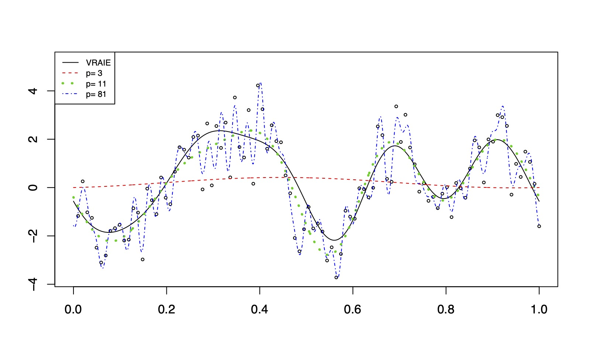
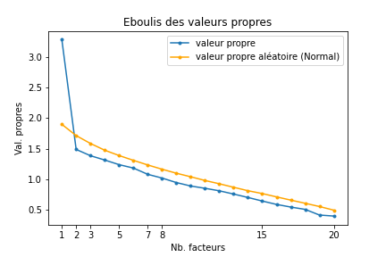

6. A propos de la parcimonie (H.P.)#
\(\newcommand{\R}{\mathbb{R}}\) \(\newcommand{\Q}{\mathbb{Q}}\) \(\newcommand{\N}{\mathbb{N}}\)
Exercise 6.1 ((H.P. du Hors Programme) Motivation avec un exemple : Régression non paramétrique - base de Fourrier - D’après le TD du Pr. Guyader)
Nous nous intéressons à un problème plus difficile : considérons que nous observons les variables aléatoires \(Y_i = f(\frac{i}{n}) + \epsilon_i\) pour \(i\in [\![1,n]\!]\), somme des valeurs d’une fonction avec un bruit. Nous supposons donc que les \(\epsilon_i\) sont i.i.d. de loi \(\mathcal{N}(0,\sigma^2)\) avec \(\sigma\) connu, et que \(f : [0, 1] \to \R\) est une fonction inconnue qui est le paramètre d’intérêt.
a) Quel est la difficulté particulière de ce modèle statistique par rapport à une régression classique ?
Solution a)
Il ne s’agit pas d’un problème linéaire.
Pour résoudre ce problème, on propose de projeter f sur une base de fonction bien choisie. Supposons pour la fin de l’exercice que
Les inconnues deviennent alors \((a_i)_{0\leq i \leq K}\) et \((b_i)_{1\leq i\leq K}\).
b) Sous cette hypothèse, écrire le modèle comme un modèle linéaire gaussien \(Y = X\beta + \epsilon\) et préciser X, \(\beta\) et le nombre de variables explicatives p.
Solution b)
Nous avons alors \(p=2K+1\),
c) On suppose à présent \(2K + 1 \leq n\). Vérifier que le modèle est identifiable (que la matrice est de rang plein), et calculer l’estimateur des moindres carrés \(\hat{\beta}\) de \(\beta\).
En déduire un estimateur \(\hat{\mu}\) de \(\mu=[f(\frac{i}{n})]_{i\in [\![1,n]\!]}\), et proposer un estimateur \(\hat{f}\) de la fonction f.
On pourra se rappeler les formules de trigonométrie, en notant j une racine carré de \(-1\) :
Solution c)
S’il existe une combinaison linéaire des colonnes nulle \(\lambda_0\sum_{k=1}^K \lambda_k X_{k+1} + \mu_k X_{K+1+k}=0\), alors le polynôme trigonométrique
admet \(2K+1\) zéro sur \([0,1]\) et est donc la fonction nulle et les coefficients sont nuls. En particulier, le système est identifiable.
Calculons la matrice \(X^tX\) à l’aide de l’indication :
Avec l’indication, pour \(k\neq \tilde{k}\),
De la même manière, l’on prouve pour \(k\neq \tilde{k}\)
et pour \(k\neq 0\),
Enfin, pour \(k=\tilde{k}\), l’on prouve que
Donc finalement \(X^tX\) est diagonale de la forme :
Finalement,
Overfitting et choix du modèle :
d) Calculer la somme des carrés de l’erreur quadratique renormalisé :
Pour K fixé, que se passe-t-il quand n tend vers l’infini ?
Solution d)
Par définition, \(Y-X\hat{\beta}= Y-\hat{Y}\) est la projection de Y sur l’espace des colones de \(X\). En particulier, d’après le théorème de Cochran, \(||\frac{Y-X\hat{\beta}}{\sigma}||^2\sim \chi^2_{n-p}\).
Nous pouvons alors en déduire l’erreur quadratique renormalisé :
Pour K fixé, cette erreur moyenne tend vers \(\sigma^2\) : le bruit prédomine.
e) On suppose que p=n, donner alors la valeur de \(r_n\). Que peut-on dire des valeurs de \(\hat{f}\) aux points \(\frac{i}{n}\) pour \(i\in [\![1,n]\!]\) ?
Solution e)
Nous avons alors que si \(p=n\), alors \(r_n=0\).
Nous avons trop de paramètre, et les valeurs de \(\hat{f}\) valent \(Y_i\).
f) Nous prenons un polynôme trigonométrique avec coefficients non nuls que pour \(k\leq 11\) dans la décomposition ci-dessus. Nous faisons n = 101 observations et choisissions diverses valeurs de K. Nous obtenons la figure ci-dessous Quels phénomènes observe-t-on ? Quelle règle proposez-vous au vu des points précédents et de cette observation pour un bon ajustement ?
{kind=link}
Solution f)
Nous voyons une mauvaise estimation si p=3 (manque de paramètres dans ce cas) et si \(p\approx n\) (overfitting). En revanche, pour \(p\approx \frac{n}{10}\), l’estimation est bonne.
Nous pouvons alors proposer la règle suivante : le nombre d’observations doit être supérieur à 10 fois le nombre de variables explicatives envisagé.
Lorsqu’on modélise un phénomène de la réalité, l’on cherche souvent à répondre à l’un des objectifs suivants :
Description, on recherche de façon exploratoire les liaisons entre une variable d’intérêt et d’autres variables potentiellement explicatives.
Explication, on souhaite confirmer ou affiner une connaissance a priori du phénomène par l’estimation des paramètres et des tests appropriés.
Prédiction, on souhaite exploiter le modèle pour prévoir des valeurs de la variable d’intérêt à partir de valeurs de variables explicatives. L’accent est alors mis sur la qualité des estimateurs et des variables explicatives, judicieusement sélectionnées.
Mais de manière bien concrète, si le modèle que l’on utilise pour prédire un évènement met trop de temps à délivrer le résultat par des moyens de calculs à notre disposition, alors le modèle est inutile, voire néfaste (des unités de temps, de calculs et d’énergie aurait pu être investie ailleurs).\newline La parcimonie est justement cet équilibre désirable entre précision du modèle et coûts du modèle (temps de calcul, nombre de variables nécessaires …).
Pour des méthodes d’estimations parcimonieuses que nous ne regarderons pas ici, l’on pourra s’intéresser à :
Méthode de Monte-Carlo
Pour l’aspect pratique de l’estimation de quantité sous forme d’espérance avec la méthode de Monte-Carlo [Liu, 2009].
Estimation avec des chaines de Markov
Pour une deuxième méthode pratique d’estimation avec des chaines de Markov, et l’étude de leurs propriétés [Levin, Peres, and Wilmer, 2006].
6.1. Algorithmes de sélection de paramètres pour la régression linéaire#
Rappelons que la régression linéaire, étudié dans Estimation par régression linéaire, consiste à trouver la “meilleure” (au sens de l’erreur quadratique) estimation affine des observations \((y_i)_{i\in[\![1,n]\!]}\) à partir des réalisations des paramètres explicatifs \((x_{i,j})_{(i,j)\in[\![1,n]\!]\times[\![1,J]\!]}\), c’est-à-dire à trouver des paramètres \((a_j)_{i\in[\![0,J]\!]}\) réalisant le minimum de l’erreur quadratique :
Mais une fois fait ce calcul d’optimisation, nous pouvons nous demander si toutes les variables d’explications était vraiment nécessaires. Si nous sommes un peu plus souples dans les erreurs acceptées, pourrions-nous drastiquement diminuer la dimension du modèle (et donc les temps de calculs qui suivront) ? Pire, ne sommes-nous pas en train de faire un sur-apprentissage, valable uniquement pour les données obtenues, mais peu généralisable ?
Pour savoir ce que nous acceptons de sacrifier comme précision au profit de la diminution du nombre de paramètres, il va falloir nous fixer un critère. Pour que celui-ci fonctionne, il faut que ce critère soit grand quand le nombre de dimensions est grand ou quand l’erreur est grande. Nous verrons ici deux critères répondant à ces attentes.
Definition 6.1
Soit \((y_i)_{i\in[\![1,n]\!]}\) une série d’observations, et \((x_{i,j})_{(i,j)\in[\![1,n]\!]\times[\![1,J]\!]}\) la série d’observations correspondantes des \(J\) variables explicatives.\newline
Pour \(\Omega_r\subset [\![1,J]\!] \) un sous-ensemble des explications de taille \(r\leq J\), on appelle :
\(C_p\) de Mallows de \(\Omega_p\) la quantité :
Critère d’Akaike de \(\Omega_p\) la quantité :
où \(SE\) est l’erreur quadratique du système entier
et \(SE(\Omega_r)\) est la somme des carrés d’erreur obtenue en ne retenant que les r variables de \(\Omega_r\) parmi les J initialement considérées :
Remark 6.1
Dans le cadre d’un modèle avec bruit gaussien centré et de variance connu égale à \(\sigma Id\), les deux critères sont équivalant dans les résultats que donnera l’application des algorithmes de sélections. En revanche, ce n’est plus le cas lorsque l’on sort de ce cadre.
L’intuition derrière la construction des algorithmes de sélection est que plus la valeur du critère est petite et plus le modèle sélectionné est parcimonieux tout en restant efficace.
Nous voudrions donc trouver un modèle ne contenat que des variables d’importance. Mais dans le cas général et évidemment le plus courant en pratique, les variables ne sont pas pré-ordonnées par importance. Il existe des algorithmes de sélection global (l’algorithme de Furnival et Wilson dit de “leaps and bound” par exemple, implémenté dans la plupart des librairies de statistique), mais ceux-ci ne sont souvent utilisables que pour un nombre de paramètres inférieur à 15.
Lorsque J est grand, il n’est pas raisonnable de penser explorer les \(2^J\) ensembles de variables explicatives afin de sélectionner le meilleur au sens de l’un des critères ci-dessus. Des algorithmes d’exploration pas-à-pas (algorithme de descente) existent. Ils se regroupent en trois types :
Sélection (forward) L’algorithme commence avec aucune variable. À chaque étape, on cherche à ajouter la variable qui diminue le plus le critère de sélection. L’algorithme s’arrête lorsque toutes les variables sont présentes ou lorsque le critère ne s’améliore plus.
Élimination (backward) L’algorithme démarre avec toutes les variables. La variable dont la suppression conduit à la plus petite valeur du critère est alors retirée. La procédure s’arrête lorsque le critère ne décroit plus.
Mixte (stepwise) Algorithme mélangeant les deux précédents. Il ajoute une étape d’élimination après chaque étape de sélection, de façon à éliminer d’éventuelles variables devenues inutiles après l’introduction d’une nouvelle variable.
6.2. L’analyse en composante principale pour diminuer la dimension#
Un autre cas de figure potentiel est si nous ne sommes pas assurés par la modélisation que nos variables explicatives soit bien indépendante et que nous ayons alors fait le meilleur choix possible dans leur description. Il est alors possible de faire une analyse en composante principale pour décrire les directions dans l’espace des variables explicative ayant la plus grande importance dans la variation de l’échantillon. Nous ne décrirons ici que le principe et la méthode numérique de calcul.
L’analyse en composante principale (ou ACP) consiste à trouver une ou plusieurs nouvelles variables explicatives, combinaison linéaire des anciennes, expliquant la plus grande partie de la variance \emph{via} une projection orthogonale.\newline Considérons donc un ensemble de variables \((X_i)_{i\in [\![1,n]\!]}\) et donnons-nous \(K\) réalisations de l’échantillon, que nous écrivons de forme matricielle comme :
Et nous ne conserverons que la version recentrée de l’échantillon :
Si l’on se donne une direction \(u\), les réalisations des projection des variables explicatives \((X_i)\) sur la droite engendrée par u est le vecteur \(Mu\). Comme celui-ci est de moyenne empirique nulle, sa variance empirique est alors $\( (Mu)^t Mu = ||Mu||_2^2\)$
Definition 6.2
On appelle première composante principale la direction \(u_1\) maximisant après projection la variance empirique :
On définit par récurrence une \(p^{ieme}\) composante principale comme la direction \(u_p\) maximisant après projection la variance empirique restante :
De manière équivalente, les composantes principales sont les vecteurs propres de la matrice \(M^tM\) si l’on a classé les valeurs propres par ordre croissant.
Proof. Estimation avec des chaines de Markov L’équivalence découle du fait que \(M^tM\) est une matrice symétrique, et admet donc une diagonalisation en vecteurs propres orthogonaux avec des valeurs propres réelles (voir le théorème spectral dans n’importe quel livre d’analyse matricielle).
Notons \(v_i\) ces vecteurs propres, de valeurs propres \(\mu_1\geq \mu_2...\geq \mu_n\).
Si l’on écrit \(u=\sum_{i=p}^n \lambda_i v_i\) avec \(\sum_{i=p}^n \lambda_i^2=1\), alors on a que :
Finalement, la question de l’ACP se ramène à un problème de diagonalisation de la matrice de covariance. Pour faciliter le traitement numérique, il est également possible d’utiliser la décomposition en valeur singulière de la matrice rectangulaire M.
Bien souvent, les données sont corrigées pour être de variance empirique 1 en divisant dans la matrice M les diverses colonnes par leur écart-type empirique (on parle alors d’ACP normée), ce qui ramène le calcul à une diagonalisation de la matrice de corrélation.
Une fois la décomposition en valeur singulière effectuée, la question du nombre de variables à conserver se pose souvent. Un certain nombre de règles empirique existent, basé sur les valeurs propres associés aux facteurs :
Conserver les facteurs pour lesquels la valeur propre est supérieure à 1 (seuil de Kaiser, souvent considéré comme trop permissif).
Conserver les facteurs \(u_p\) pour lesquels la valeur propre est supérieure à \(\sum_{i=p}^n \frac{1}{i}\) (test des bâtons brisés à 5% correspondant à une distribution uniforme de la dispersion sur les axes).
Conserver les facteurs \(u_p\) pour lesquels la valeur propre est supérieure à \(1-2\sqrt{\frac{p-1}{n-1}}\) (test unilatéral de conformité à 5% de loi asymptotiquement normale).
Tracer les valeurs propres en fonction de leur numéro d’apparition, et ne garder que les valeurs propres avant la cassure nette de pente.
Tirer aléatoirement un échantillon de variables aléatoires indépendantes de loi normale centré-réduite, et comparer son ACP à celle des variables renormalisé centrée et réduite
Dans tous les cas, il est pertinent de tracer cette courbe des valeurs propres en fonction de leur numéro d’apparition (appelé éboulis de valeur propre) et le critère correspondant. Par exemple, si l’on cherche à extraire les groupes de questions pertinentes du test de rentrée de 2021 du parcours 3EA de l’ENSEEIHT, Toulouse-INP, l’on trouve le graphique suivant :
{kind=link}
Il faut ensuite savoir combien de recombinaison garder, suivant les critères, l’on gardera que le premier facteur (qui se trouve correspondre à la note totale), les 8 premiers facteurs (test de Kaiser et des bâtons brisés) ou encore tous les facteurs (test de conformité). Au vu du test aléatoire, il semble pertinent de ne conserver que la première composante. Ainsi, il n’y a pas de groupe de question expliquant mieux la dispersion entre individus que la note totale.